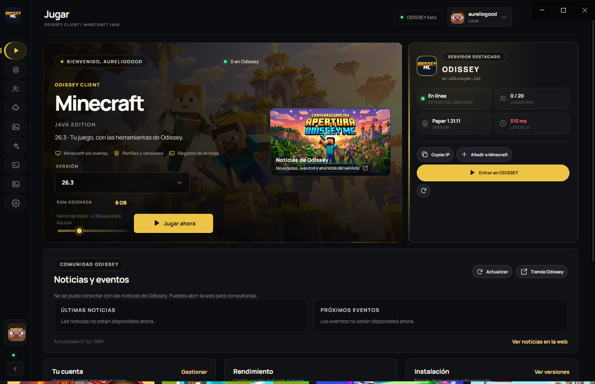

Prepara tu perfil
En la pantalla Jugar, selecciona la versión de Minecraft y ajusta la memoria asignada para tu equipo.
Odissey Client reúne el inicio de Minecraft, tus versiones y herramientas de juego en una sola aplicación de escritorio. El launcher se queda fuera; Minecraft abre limpio, como siempre.

Prepara tu versión de Minecraft y conéctate al servidor desde el cliente o desde el menú multijugador.
En la pantalla Jugar, selecciona la versión de Minecraft y ajusta la memoria asignada para tu equipo.
Usa la acción para entrar al servidor desde el launcher o agrégalo a tu lista multijugador de Minecraft Java.
mc.odisseymc.latPulsa Jugar ahora para abrir Minecraft. Si tienes un problema, revisa Registro para consultar los logs recientes.
Un launcher propio para preparar la sesión, encontrar lo importante y volver a tu partida sin llenar Minecraft de paneles ajenos.
Consulta instalaciones, elige tu versión y prepara el perfil de juego desde el launcher, con comprobación de archivos y caché local.
IncluidoAnaliza ajustes de Java y memoria y aplica opciones compatibles con tu equipo. También puedes instalar un preset Fabric de mods de rendimiento.
IncluidoOdissey Client trabaja fuera del juego. No añade un overlay propio ni un panel que se abra con Shift mientras juegas.
Enfoque del launcherConsulta los registros recientes de Minecraft y revisa informes de cierre desde una sección dedicada del launcher.
Diagnóstico integradoExplora las capturas de tu perfil, abre su carpeta o accede a ellas desde el menú del launcher.
Biblioteca de capturasRich Presence muestra que estás jugando Odissey Client cuando Discord de escritorio está abierto.
Discord Rich PresenceEl optimizador puede buscar versiones compatibles de Sodium, Lithium, FerriteCore, ImmediatelyFast, ModernFix y Krypton para tu perfil Fabric. Revisa siempre la compatibilidad de tus mods y conserva una copia de tus mundos antes de cambiar tu instalación.
Copia la dirección del servidor y añádelo a tu lista multijugador. El launcher también ofrece una acción rápida para conectarte.
El acceso con cuenta Microsoft requiere que Minecraft apruebe el AppID de Odissey. Hasta que se apruebe, la validación de Minecraft puede rechazar el inicio de sesión. Puedes usar un perfil offline para mundos locales o servidores que acepten ese modo.
Odissey Client es una herramienta independiente para organizar el inicio del juego. Estas respuestas aclaran qué hace y qué no hace.
No. El launcher funciona como aplicación externa. El cliente abre sin overlay de Odissey ni paneles propios dentro del juego.
El flujo está integrado, pero Minecraft Services debe autorizar primero el AppID de Odissey. Si aún no ha sido aprobado, el servicio devuelve “Invalid app registration” y la cuenta no se añade.
No. El perfil offline sirve para mundos locales y servidores que permitan acceso offline. No verifica propiedad de Minecraft ni sustituye una cuenta Microsoft en servidores oficiales.
Abre Registro en el launcher para consultar los logs recientes y el informe de cierre disponible, con pistas para diagnosticar errores comunes.
La gestión general de mods todavía no está disponible en esta versión. El optimizador sí ofrece un preset específico para perfiles Fabric; sus opciones dependen de la compatibilidad del catálogo.
Prepara tu perfil, revisa tus herramientas y entra al mundo de Odissey.